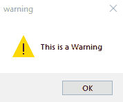
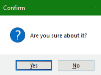
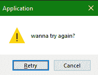
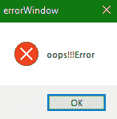

Tkinter 消息框
在本教程中，我们将介绍如何在开发桌面应用时创建和使用 Tkinter MessageBox 。
为了在桌面应用中显示消息框，我们使用了 Tkinter 中的消息框模块。
- 该模块中存在各种功能，有助于根据的要求提供合适类型的消息。
* 借助这个模块，我们可以创建弹出消息框，接受用户输入**。
* 消息框模块的功能如下:`showError()`、`askretrycancel()`、`showwarning()`等。，所有这些都用于创建消息框。**
**## Tkinter messagebox-tkinter 信使信箱
要使用 messagebox 模块，我们首先需要在 python 脚本中导入它:
from tkinter import messagebox
下面是使用消息框的基本语法:
messagebox.function_name(title, message [, options])
在上面的语法中，我们使用了以下内容:
功能 _ 名称
这用于指示相应消息框函数的名称。
标题
这用于指示要在相应消息框的标题栏中显示的文本。
消息
这用于指示要在消息框中显示为消息的文本。
选项
它用于指示各种选项，以便配置消息框。它有两个值，分别是默认和父。
默认:用于指定一个默认按钮，如 ABORT、RETRY、IGNORE。
父级:用于指定一个窗口，我们将在该窗口的顶部显示消息框。
消息框模块中的功能使用相同的语法，但每个功能的功能不同。
让我们看看 Tkinter MessageBox 模块的几个功能。
Tkinter MessageBox - showwarning()
该方法用于在 Python 应用中向用户显示任何警告。
下面是相同的代码:
from tkinter import *
from tkinter import messagebox
win = Tk()
win.geometry("200x200")
messagebox.showwarning("warning","This is a Warning")
win.mainloop()

Tkinter MessageBox - askquestion()
MessageBox 中的这种方法主要用于向用户提问，可以在是或者否中回答。
此方法的代码如下:
from tkinter import *
from tkinter import messagebox
win = Tk()
win.geometry("100x100")
messagebox.askquestion("Confirm","Are you sure about it?")
win.mainloop()

Tkinter MessageBox - askretrycancel()
如果你想要求用户做任何特定的任务或者不做，那么将使用这个方法。
让我们看看相同的代码:
from tkinter import *
from tkinter import messagebox
win= Tk()
win.geometry("100x100")
messagebox.askretrycancel("Application"," wanna try again?")
win.mainloop()

Tkinter MessageBox - showerror()
要显示错误信息，将使用该方法。
让我们看看下面给出的代码片段:
from tkinter import *
from tkinter import messagebox
top = Tk()
top.geometry("100x100")
messagebox.showerror("errorWindow","oops!!!Error")
top.mainloop()

总结:
在本教程中，我们学习了不同类型的消息框，我们可以创建这些消息框来向用户显示信息或接受用户的输入，如确认任何操作等。消息框就像弹出窗口，我们可以在其中显示错误、警告等。给用户。